📋 THÔNG TIN SINH VIÊN
| STT |
Họ và Tên |
MSSV |
| 1 |
NGUYỄN THỊ KIM CHI |
[MSSV1] |
| 2 |
[Họ tên SV2] |
[MSSV2] |
| 3 |
[Họ tên SV3] |
[MSSV3] |
Mã lớp: NT132.M11.ANTT.1
1. MỤC TIÊU BÀI LAB
- Làm quen và sử dụng phần mềm Packet Tracer để giả lập mô hình mạng
- Hiểu rõ cách chia địa chỉ IP với số host không bằng nhau (VLSM)
- Xây dựng mô hình mạng và cấu hình thiết bị Cisco
- Hiểu nguyên tắc định tuyến và cấu hình định tuyến tĩnh với đường chính/dự phòng
2. SƠ ĐỒ MẠNG (TOPOLOGY)
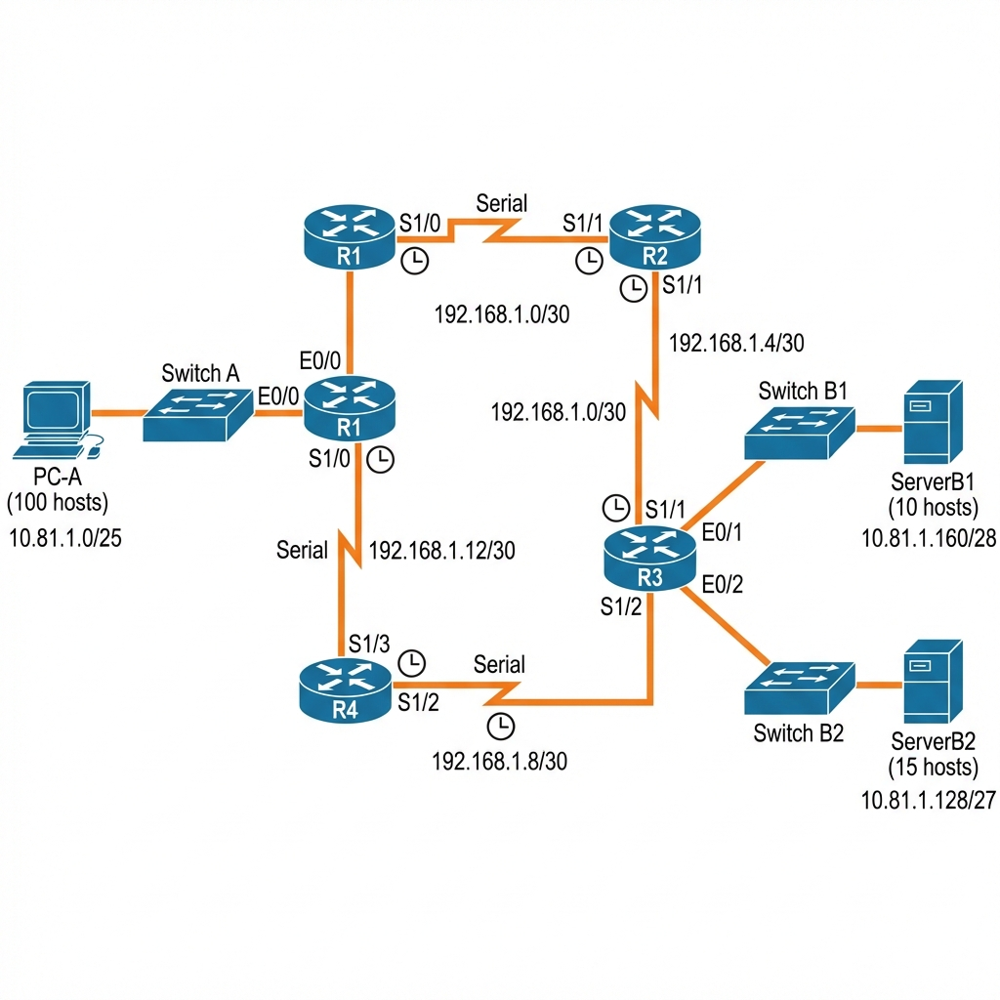
Hình 1. Sơ đồ mạng Lab 1 - VLSM và Static
Routing
Mô tả topology:
- Nhánh 1: PC-A (100 hosts) nối với R1
- Nhánh 2: ServerB1 (10 hosts) nối với R3
- Nhánh 3: ServerB2 (15 hosts) nối với R3
- Kết nối Router: R1 ↔ R2, R1 ↔ R4, R2 ↔ R3, R4 ↔ R3 (vòng tròn)
3. CHIA ĐỊA CHỈ IP - VLSM (Yêu cầu 1)
Địa chỉ gốc: 10.81.x.0/24 (với x là số thứ tự nhóm)
Ví dụ: Sử dụng 10.81.1.0/24 cho nhóm 1
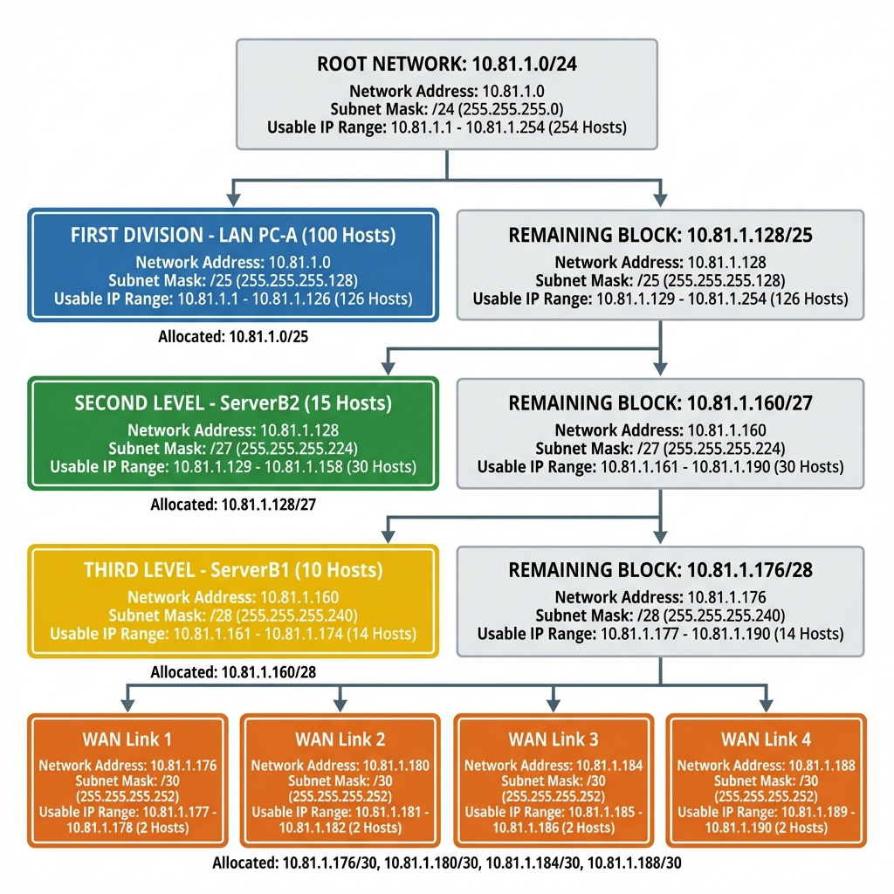
Hình 2. Sơ đồ phân chia VLSM từ
10.81.1.0/24
3.1 Bảng phân chia Subnet
| Số hosts |
Network |
Subnet Mask |
Dải IP |
Broadcast |
| 100 (LAN PC-A) |
10.81.1.0/25 |
255.255.255.128 |
10.81.1.1 - .126 |
10.81.1.127 |
| 15 (ServerB2) |
10.81.1.128/27 |
255.255.255.224 |
10.81.1.129 - .158 |
10.81.1.159 |
| 10 (ServerB1) |
10.81.1.160/28 |
255.255.255.240 |
10.81.1.161 - .174 |
10.81.1.175 |
| 2 (WAN R1-R2) |
10.81.1.176/30 |
255.255.255.252 |
10.81.1.177 - .178 |
10.81.1.179 |
| 2 (WAN R1-R4) |
10.81.1.180/30 |
255.255.255.252 |
10.81.1.181 - .182 |
10.81.1.183 |
| 2 (WAN R2-R3) |
10.81.1.184/30 |
255.255.255.252 |
10.81.1.185 - .186 |
10.81.1.187 |
| 2 (WAN R4-R3) |
10.81.1.188/30 |
255.255.255.252 |
10.81.1.189 - .190 |
10.81.1.191 |
3.2 Bảng địa chỉ IP các thiết bị (Yêu cầu 2)
| Thiết bị |
Interface |
Địa chỉ IP |
Subnet Mask |
Default GW |
| R1 |
G0/0/1 |
10.81.1.1 |
255.255.255.128 |
N/A |
| S0/1/0 |
10.81.1.177 |
255.255.255.252 |
N/A |
| S0/1/1 |
10.81.1.181 |
255.255.255.252 |
N/A |
| R2 |
S0/1/0 |
10.81.1.178 |
255.255.255.252 |
N/A |
| S0/1/1 |
10.81.1.185 |
255.255.255.252 |
N/A |
| R3 |
G0/0/0 |
10.81.1.161 |
255.255.255.240 |
N/A |
| G0/0/1 |
10.81.1.129 |
255.255.255.224 |
N/A |
| S0/1/0 |
10.81.1.186 |
255.255.255.252 |
N/A |
| S0/1/1 |
10.81.1.190 |
255.255.255.252 |
N/A |
| R4 |
S0/1/0 |
10.81.1.182 |
255.255.255.252 |
N/A |
| S0/1/1 |
10.81.1.189 |
255.255.255.252 |
N/A |
| PC-A |
NIC |
10.81.1.126 |
255.255.255.128 |
10.81.1.1 |
| ServerB1 |
NIC |
10.81.1.174 |
255.255.255.240 |
10.81.1.161 |
| ServerB2 |
NIC |
10.81.1.158 |
255.255.255.224 |
10.81.1.129 |
4. CẤU HÌNH CƠ BẢN CHO THIẾT BỊ (Yêu cầu 3)
4.1 Cấu hình Router R1
Router> enable
Router# configure terminal
Router(config)# hostname R1
R1(config)# enable password cisco
R1(config)# service password-encryption
R1(config)# line console 0
R1(config-line)# password cisco
R1(config-line)# login
R1(config-line)# exit
R1(config)# line vty 0 4
R1(config-line)# password cisco
R1(config-line)# login
R1(config-line)# exit
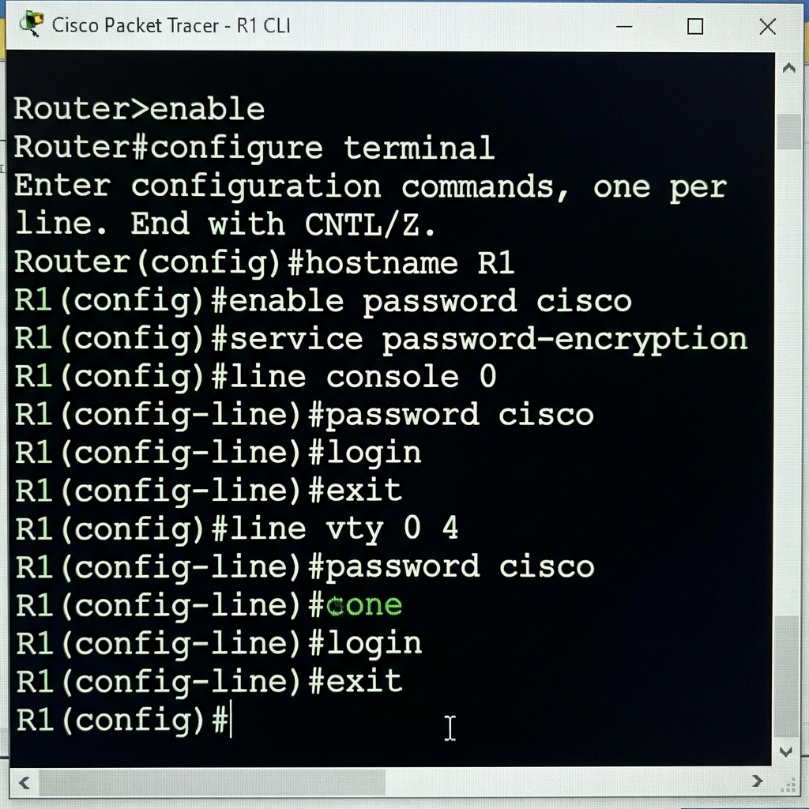
Hình 4. Cấu hình cơ bản Router R1
4.2 Cấu hình Router R2, R3, R4
Thực hiện tương tự R1, thay đổi hostname tương ứng (R2, R3, R4)
5. CẤU HÌNH INTERFACE (Yêu cầu 4)
5.1 Cấu hình Interface trên R1
R1(config)# interface
GigabitEthernet 0/0/1
R1(config-if)# ip address 10.81.1.1
255.255.255.128
R1(config-if)# no shutdown
R1(config-if)# exit
R1(config)# interface Serial 0/1/0
R1(config-if)# ip address 10.81.1.177
255.255.255.252
R1(config-if)# no shutdown
R1(config-if)# exit
R1(config)# interface Serial 0/1/1
R1(config-if)# ip address 10.81.1.181
255.255.255.252
R1(config-if)# no shutdown
R1(config-if)# exit
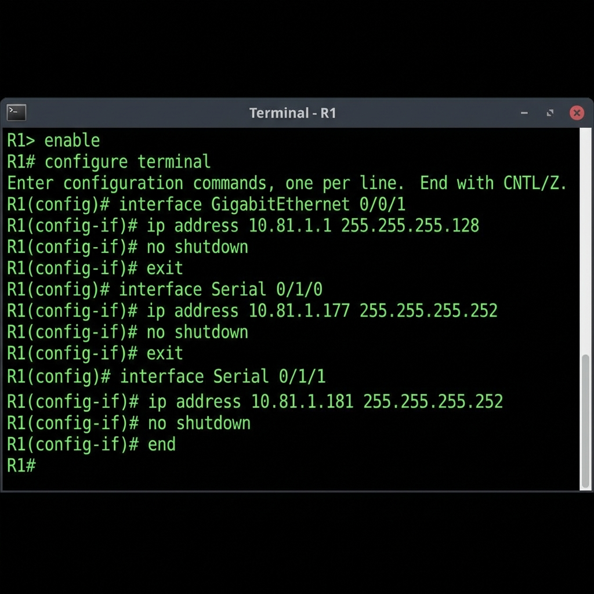
Hình 5. Cấu hình Interface trên R1
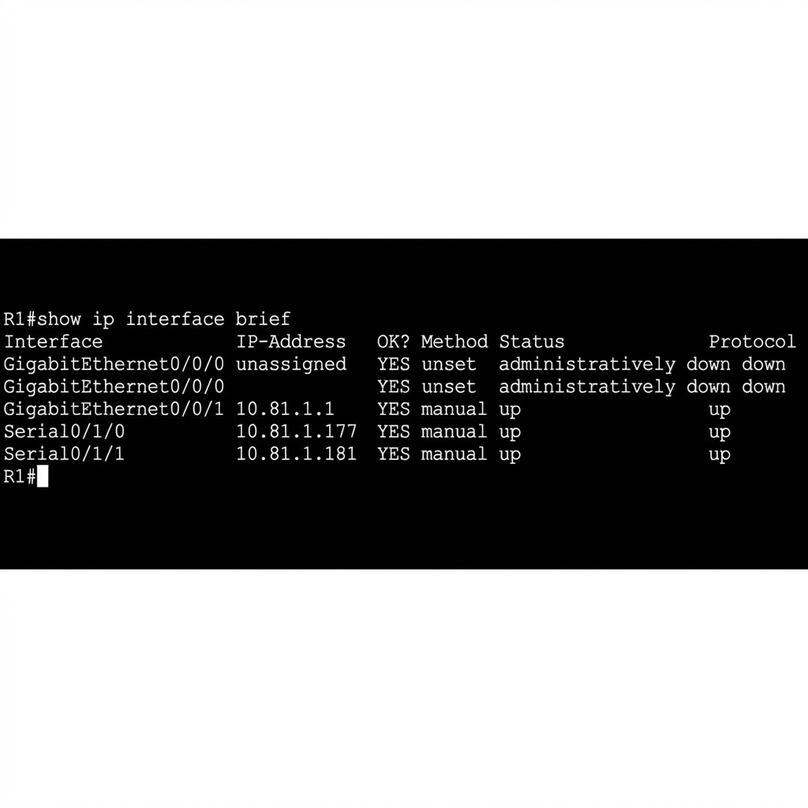
Hình 6. Kết quả show ip interface brief
trên R1
5.2 Cấu hình Interface trên R2
R2(config)# interface Serial
0/1/0
R2(config-if)# ip address 10.81.1.178
255.255.255.252
R2(config-if)# no shutdown
R2(config-if)# exit
R2(config)# interface Serial 0/1/1
R2(config-if)# ip address 10.81.1.185
255.255.255.252
R2(config-if)# no shutdown
R2(config-if)# exit
Cấu hình tương tự R1 cho các interface của Router
khác
5.3 Cấu hình Interface trên R3
R3(config)# interface
GigabitEthernet 0/0/0
R3(config-if)# ip address 10.81.1.161
255.255.255.240
R3(config-if)# no shutdown
R3(config-if)# exit
R3(config)# interface GigabitEthernet 0/0/1
R3(config-if)# ip address 10.81.1.129
255.255.255.224
R3(config-if)# no shutdown
R3(config-if)# exit
R3(config)# interface Serial 0/1/0
R3(config-if)# ip address 10.81.1.186
255.255.255.252
R3(config-if)# no shutdown
R3(config-if)# exit
R3(config)# interface Serial 0/1/1
R3(config-if)# ip address 10.81.1.190
255.255.255.252
R3(config-if)# no shutdown
R3(config-if)# exit
Chèn screenshot kết quả show ip interface brief trên R3
5.4 Cấu hình Interface trên R4
R4(config)# interface Serial
0/1/0
R4(config-if)# ip address 10.81.1.182
255.255.255.252
R4(config-if)# no shutdown
R4(config-if)# exit
R4(config)# interface Serial 0/1/1
R4(config-if)# ip address 10.81.1.189
255.255.255.252
R4(config-if)# no shutdown
R4(config-if)# exit
Chèn screenshot kết quả show ip interface brief trên R4
5.5 Cấu hình IP cho PC và Server
PC-A: IP: 10.81.1.126 | Mask: 255.255.255.128 | Gateway: 10.81.1.1
ServerB1: IP: 10.81.1.174 | Mask: 255.255.255.240 | Gateway: 10.81.1.161
ServerB2: IP: 10.81.1.158 | Mask: 255.255.255.224 | Gateway: 10.81.1.129
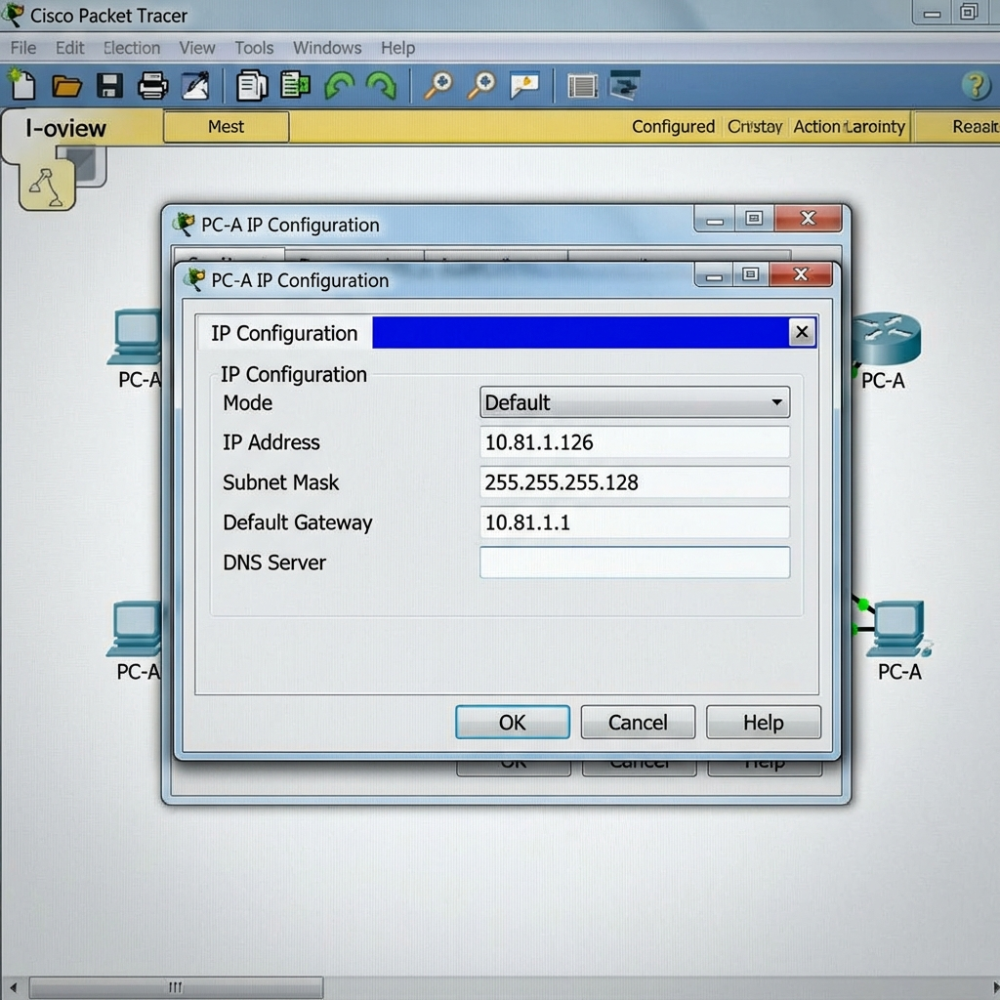
Hình 7. Cấu hình IP cho PC-A trong Packet
Tracer
6. CẤU HÌNH ĐỊNH TUYẾN TĨNH (Yêu cầu 5)
Yêu cầu đường đi:
📍 Đường chính: PC-A → R1 → R2 → R3 → ServerB1, ServerB2
📍 Đường dự phòng: PC-A → R1 → R4 → R3 → ServerB1, ServerB2
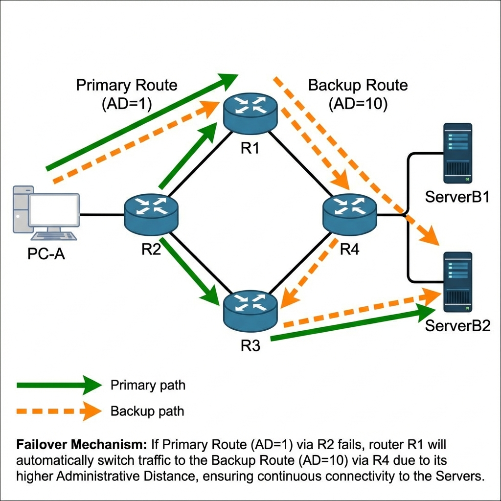
Hình 3. Sơ đồ đường đi chính và đường dự
phòng
6.1 Static Route trên R1
R1(config)# ip route 10.81.1.160 255.255.255.240
10.81.1.178
R1(config)# ip route 10.81.1.128 255.255.255.224
10.81.1.178
R1(config)# ip route 10.81.1.160 255.255.255.240
10.81.1.182 10
R1(config)# ip route 10.81.1.128 255.255.255.224
10.81.1.182 10
Hình 8. Cấu hình Static Route trên R1
6.2 Static Route trên R2
R2(config)# ip route 10.81.1.160
255.255.255.240 10.81.1.186
R2(config)# ip route 10.81.1.128 255.255.255.224
10.81.1.186
R2(config)# ip route 10.81.1.0 255.255.255.128
10.81.1.177
Cấu hình tương tự cho R2, R3, R4
6.3 Static Route trên R3
R3(config)# ip route 10.81.1.0 255.255.255.128
10.81.1.185
R3(config)# ip route 10.81.1.0 255.255.255.128
10.81.1.189 10
Cấu hình tương tự cho R2, R3, R4
6.4 Static Route trên R4
R4(config)# ip route 10.81.1.160
255.255.255.240 10.81.1.190
R4(config)# ip route 10.81.1.128 255.255.255.224
10.81.1.190
R4(config)# ip route 10.81.1.0 255.255.255.128
10.81.1.181
Cấu hình tương tự cho R2, R3, R4
6.5 Lưu cấu hình
R1# copy running-config
startup-config
R2# copy running-config startup-config
R3# copy running-config startup-config
R4# copy running-config startup-config
7. KIỂM TRA VÀ XÁC NHẬN
7.1 Kiểm tra Routing Table
R1# show ip route
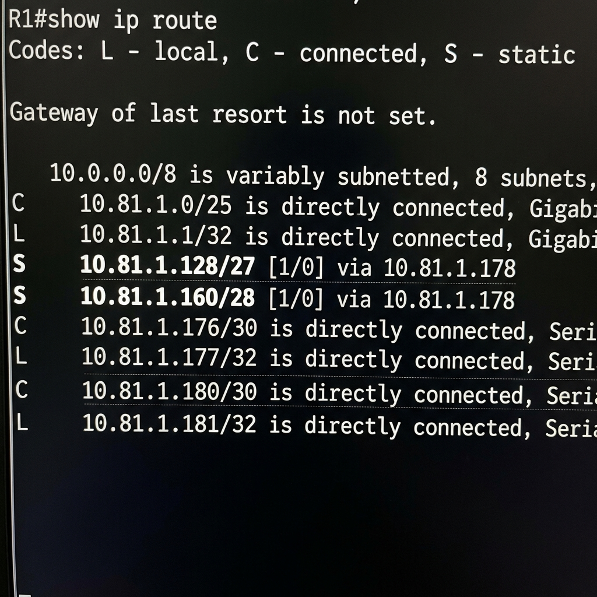
Hình 9. Kết quả show ip route trên R1 (S =
Static Route)
7.2 Kiểm tra kết nối đường chính
C:\> ping 10.81.1.174
Kết quả mong đợi: Reply from 10.81.1.174: bytes=32 time<1ms TTL=125
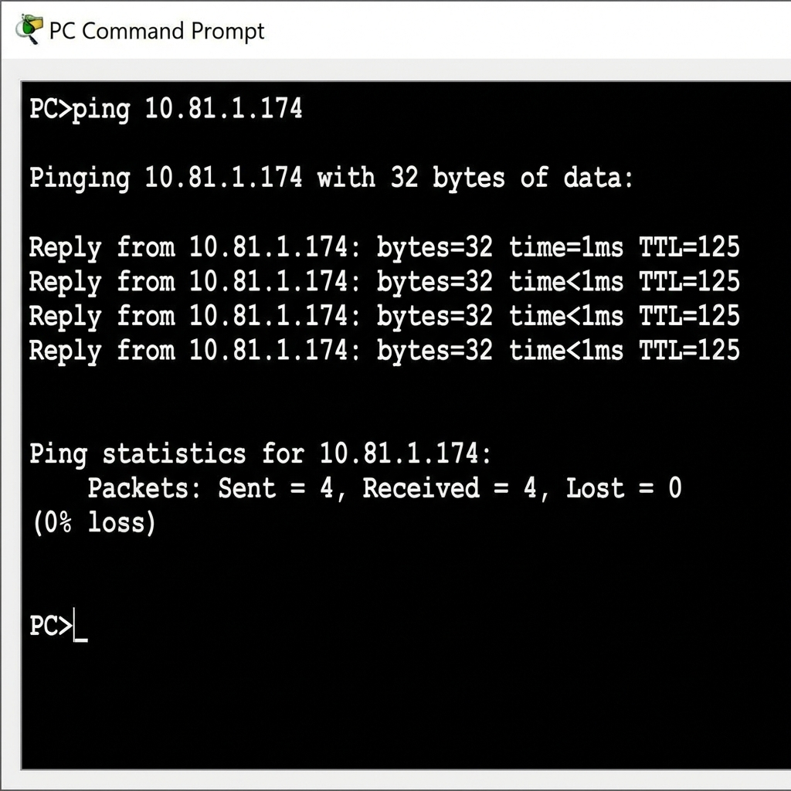
Hình 10. Kết quả ping từ PC-A đến ServerB1
(10.81.1.174)
C:\> tracert 10.81.1.174
Kết quả mong đợi (đường chính qua R2):
1 10.81.1.1 (R1)
2 10.81.1.178 (R2)
3 10.81.1.186 (R3)
4 10.81.1.174 (ServerB1)
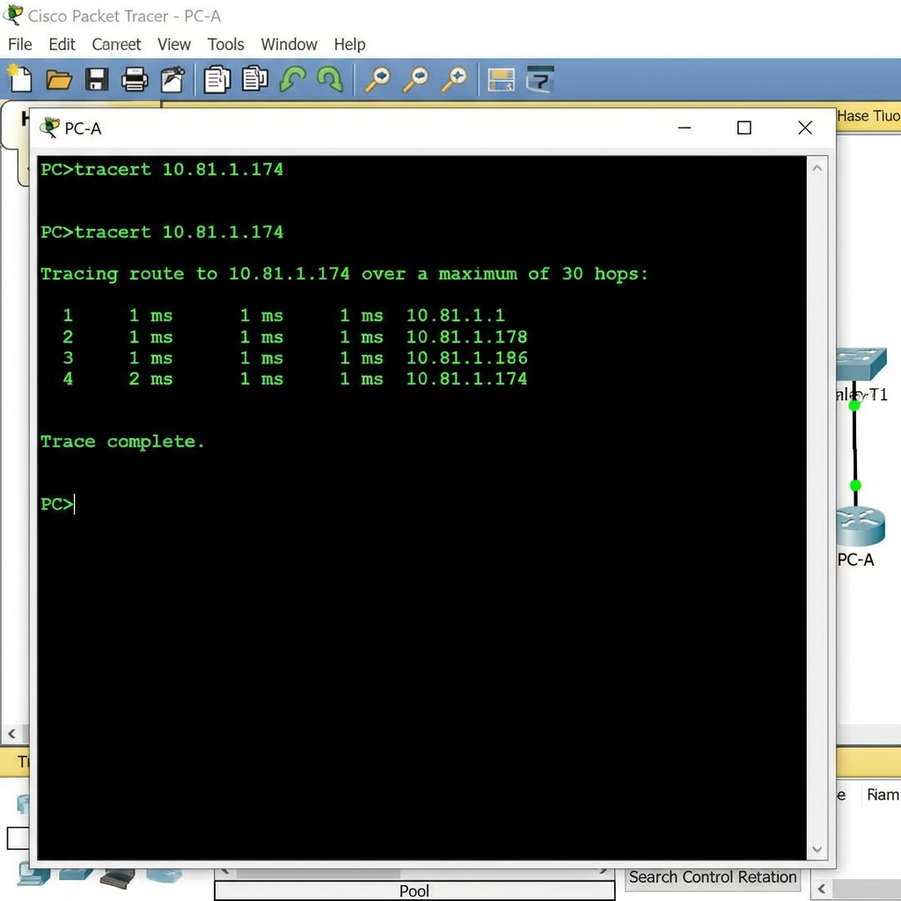
Hình 11. Tracert đường chính: PC-A → R1 →
R2 → R3 → ServerB1
7.3 Kiểm tra đường dự phòng
Bước 1: Tắt Router R2 (hoặc shutdown interface trên R2)
Bước 2: Thực hiện tracert lại từ PC-A đến ServerB1
Kết quả mong đợi (đường dự phòng qua R4):
1 10.81.1.1 (R1)
2 10.81.1.182 (R4)
3 10.81.1.190 (R3)
4 10.81.1.174 (ServerB1)
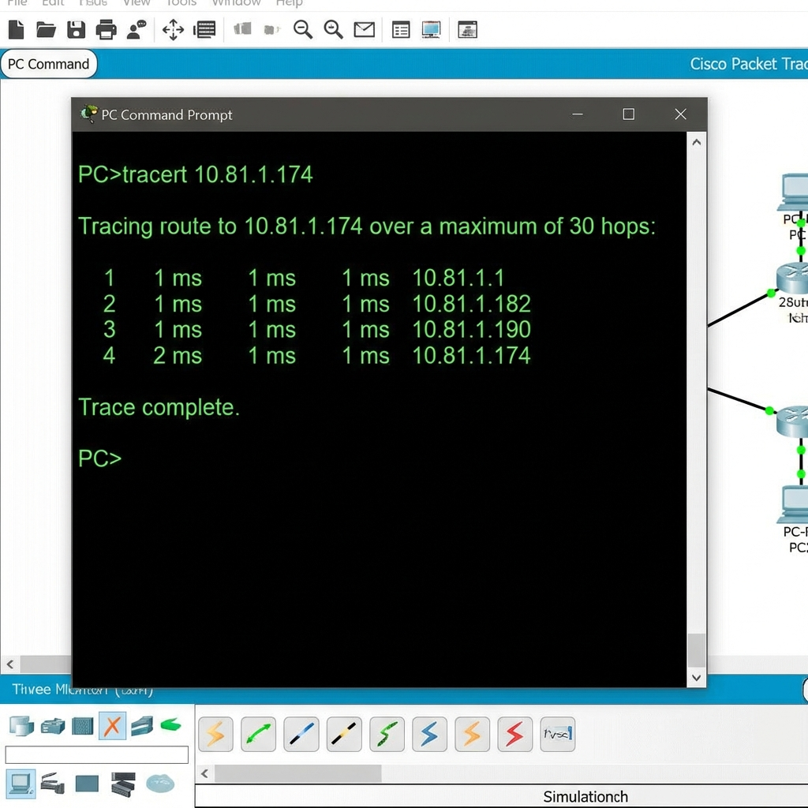
Hình 12. Tracert đường dự phòng: PC-A → R1
→ R4 → R3 → ServerB1 (khi R2 bị tắt)
8. KẾT LUẬN
- Đã hoàn thành chia địa chỉ IP bằng VLSM cho 7 subnet
- Đã cấu hình hostname và password cho 4 router (R1, R2, R3, R4)
- Đã cấu hình IP address cho tất cả interface
- Đã cấu hình Static Routing với đường chính (qua R2) và đường dự phòng (qua R4)
- Đã kiểm tra kết nối thành công bằng ping và tracert
- Đã kiểm tra đường dự phòng hoạt động khi R2 bị tắt
Ngày hoàn thành: ___/___/2026
Chữ ký sinh viên:
_________________________